Quem Somos?
OPA é um grupo de amigos que jogam Counter Strike 2. Nosso objetivo é manter um grupo ativo de jogadores com diferentes níveis de habilidade. Valorizamos manter um ambiente saudável durante as partidas e ao mesmo tempo levar o jogo a sério.
Regras
1. Formação do lobby. A prioridade de quem joga é definida pela ordem dos "Opas" (ou manifestação de intenção de jogar) no grupo do whatsapp. O "Opa" expira depois de 15min sem resposta ou sem presença no discord.
2. No final de uma partida, se outras pessoas estiverem no discord aguardando para jogar, e a quantidade de jogadores que "precisam sair" não for suficientes para acomodar os "esperantes". Um sorteio será realizado entre os que já jogaram para definir quem fica de fora, com exceção dos jogadores que possuírem e quiserem gastar o "Anjo"
3. A obtenção do anjo é automática a todos que forem sorteados e ficarem de fora de uma partida
4. Sorteio será realizado em live stream com utilização de site público em modo melhor de 3 (o primeiro que for sorteado 3x está fora)
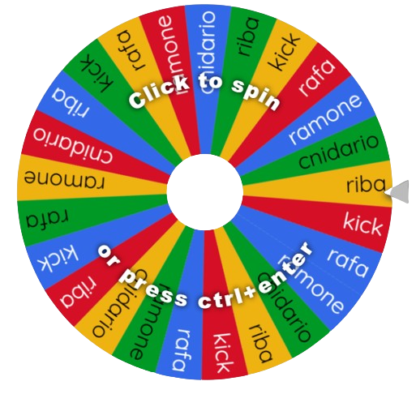5. No caso excepcional em que a quantidade de jogadores com anjo for maior do que a quantidade de jogadores que "precisam sair" para que os de fora entrem, um sorteio será realizado entre os jogadores com anjo para definir quem sai. O jogador sorteado não ganha anjo.
Membros
Temos como objetivo manter uma media de 15 jogadores no grupo. Caso haja novos jogadores querendo entrar no grupo, os jogadores que estiverem inativos (menos de 8 partidas por Season) serao removidos.
Jogadores removidos podem voltar mas entram no processo de recrutamento novamente.
Pool Ativo:
| 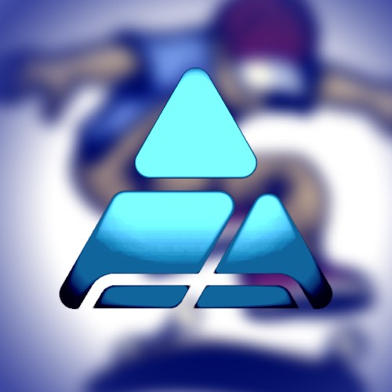 | KICKFLIP | Admin | 2020 |
| 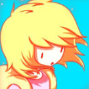 | Chalk | Admin | 2023 |
| 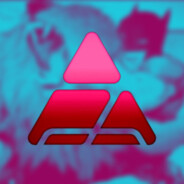 | Flafjr | Admin | 2020 |
| Cnidario | Ancião | 2020 | |
| 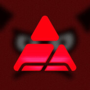 | NotProPlayer | Ancião | 2020 |
| Mark | Ancião | 2020 | |
| 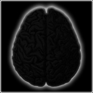 | malabar | Lenda | 2020 |
| 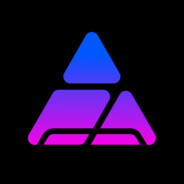 | f3rraz | Ancião | 2021 |
| 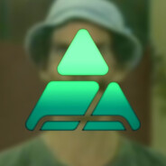 | rafA | Véiaco | 2022 |
| 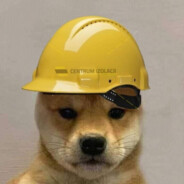 | Ramone | Ancião | 2020 |
| 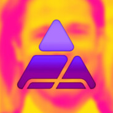 | Marlon Zambroni | Experiente | 2023 |
| 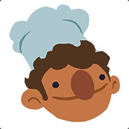 | Cezinha | Novinho | 2024 |
| 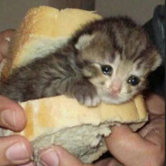 | Purgatory | Novinho | 2024 |
| 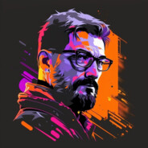 | Freeman | Novinho | 2024 |
| 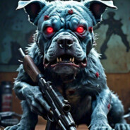 | Blue Dog | Novinho | 2024 |
| Elvis Astronauta | Novinho | 2024 |
Siga o canal @chalkmemo no YouTube
Season One
Nessa season todos nos fomos vencedores =]

Season Two
Tivemos um visível aumento na quantidade de partidas e players ativos. Porém, menor % de vitórias.
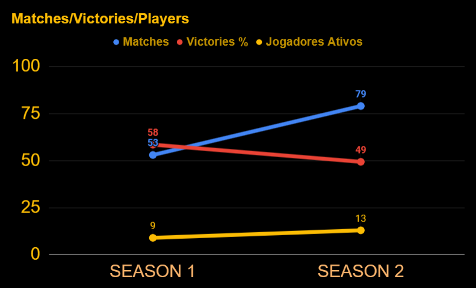Performance individual.
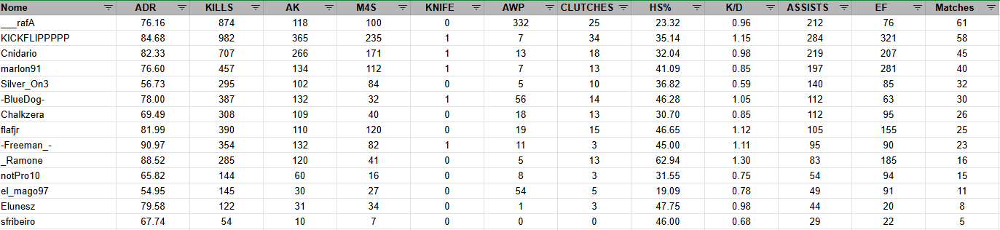OPA Awards.
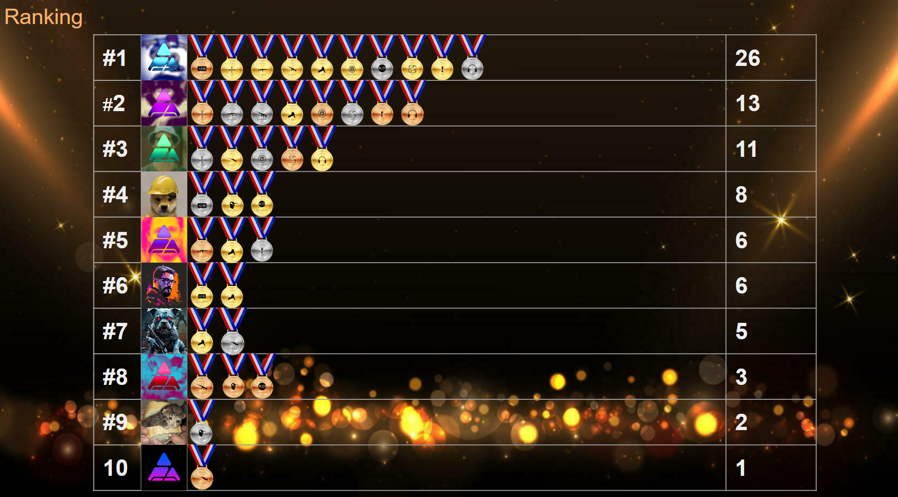Nesta season, o primeiro colocado da categoria "Most Matches" foi presenteado com uma Skin Zeus x27 | Olympus, patrocinada pelo Marlon Zamboni!
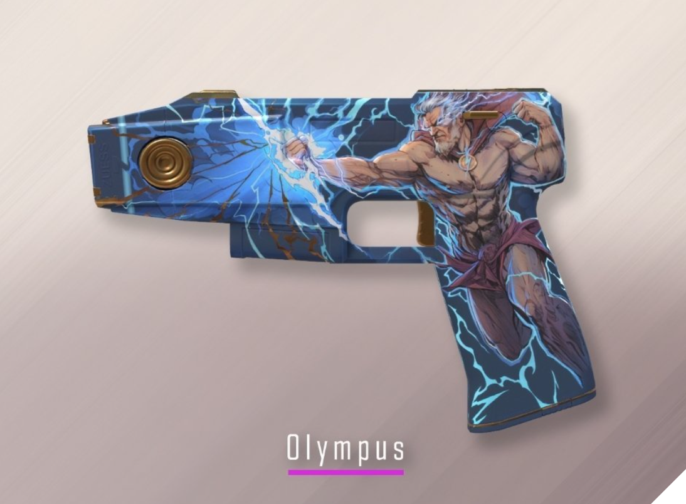Também tivemos o sorteio de uma Shadow Dagger | Night. Quem levou foi Cnidario!
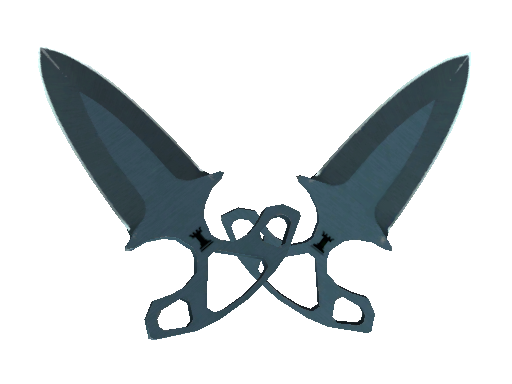
Mirage - Smoke Cabecinha


Stand + Throw
Inferno - Flash Fallen


Stand + Throw
Setup de treino
Crie um arquivo treino.cfg com esse conteúdo e salve na pasta "C:\Program Files (x86)\Steam\userdata\{userId}\730\local\cfg"
// Server configuration
sv_cheats 1;
mp_limitteams 0;
mp_autoteambalance 0;
mp_freezetime 0;
mp_roundtime_defuse 60;
mp_startmoney 99999;
mp_buytime 9999;
mp_buy_anywhere 1;
ammo_grenade_limit_total 5;
sv_infinite_ammo 1;
bot_kick;
mp_warmup_end;
sv_grenade_trajectory 1;
sv_grenade_trajectory_time 10;
sv_showimpacts 1;
sv_showimpacts_time 10;
mp_restartgame 1;
bind "uparrow" sv_rethrow_last_grenade
Say “Practice config enabled”;
Digite no console o nome do mapa que deseja treinar (ex: "map de_inferno") Quando a partida começar digite no console "exec treino"